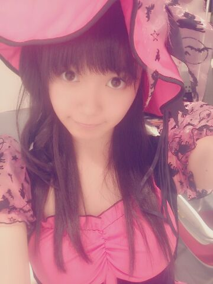

| 2013/10 31 Thu | ひめたん(*>ω<*)そ の362 |
ハロウィンもひとつあったー

生写真。魔女さんになりました！
せくしー期待してるってゆったので
がんばってせくしーしてみました
へいせくしー

へいせくしー！
きゃーみなさんおこおこしないでー
みるって打ったら
見る・観るに続きて
( ゜д゜ ) って出てきた
なに見たの？なにを見たのー？
7thシングル「バレッタ」


 生写真とかもたくさん持ってたりしたら...
生写真とかもたくさん持ってたりしたら...
嬉しい
それか...その人と距離置いちゃうってことはない
キョリ置いちゃうってことはないです！
嬉しいよーありがとーう∩^ω^∩
ひめたん党首のビーム党って
今党員何人くらいいるのー？笑
正式には３人かなあ
そういやブログのコメントとかで
ちょいちょい党員になりたいーって
言ってくださってるのみるけど
え入る？入りたいかしらー？
ビーム党の前にひとまず
ひめきゅんさんに仲間入りしてはどうかな。
メンバーから
バカリボンバカリボンといじられて、
正直どんな気持ち？
愛に溢れたニックネームだなーと思って
嬉しい気持ちですよ(´；ω；｀)
バカだなんてかわいくないニュアンスも
愛だなあと(´；ω；｀)ね
別に悲しくなんか(´；ω；｀)ナイテナイヨー
ひめたんビームって壁とか貫通するの？？
いやー無理でしょうねー無理ですよー
だって壁って。壁ですもん壁。
センターまであと３ヶ月、、、
ひめたんからの応援欲しいです。
最近 受験生さん応援してーて方
たくさんいらっしゃる気がします
そんな時期かしら。
えーっと、とりあえず体調に気をつけて
無理はしないでくださいね♪
応援してます！
着ぐるみのレパートリー教えてえな？！
ひめたんはうさぎさんの他に
どんな着ぐるみを持っているんですか？
◎ケアベアちゃん
◎かぼちゃたん
◎マイメロちゃん
◎もこもこうさぎさん
この中に高校生がひとりだけいます
さあ誰でしょう(´ω`)わかる？

あすかりん＊ひめたん＊みりりん＊純奈たん
(＊´・ω・＊)
コメント(350)
2013/10/31 09:18